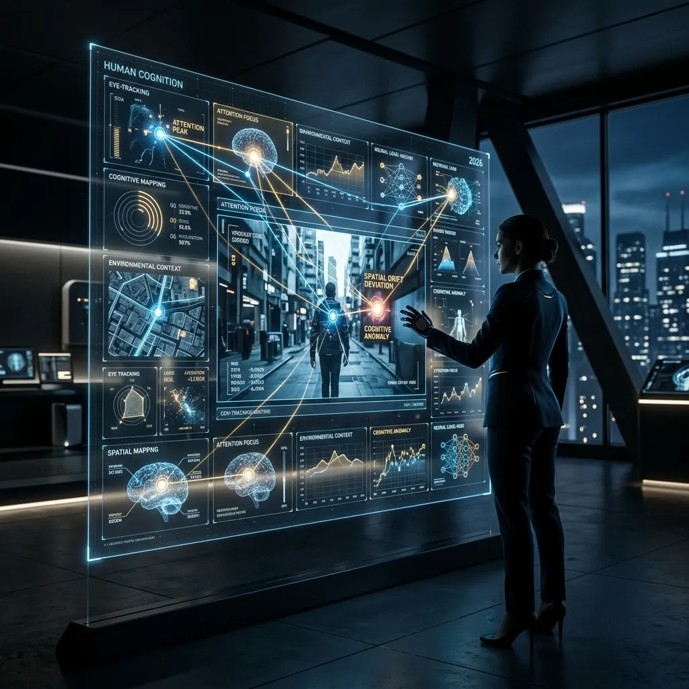

The Psychology of Video Grids: Why We Love Multitasking

In the hyper-accelerated communication landscape of 2026, the nature of human attention has undergone a fundamental transformation, shifting from a linear-focus model to a high-velocity "Scanning Mind."
We are no longer designed to consume information one source at a time. The modern professional—whether they are a market analyst, a competitive gamer, or a data-driven strategist—requires a visual environment that aligns with this new cognitive reality. The "Video Grid" has emerged as the most efficient way to achieve this alignment, but its effectiveness depends entirely on the design principles used to construct it. A poorly designed grid is a source of chaos; a psychologically optimized grid is a source of high-performance intelligence. This deep-dive guide explores the cognitive science behind video grids and examines how you can design a dashboard that supports deep focus in a world of simultaneous information. Success in 2026 is about the architecture of your attention.
Visual Hierarchy and Spatial Memory: How Our Brain Processes Grids
Our brains are naturally wired for "Spatial Recognition." Evolution has primed us to scan wide horizons for critical signals while maintaining a "Primary Focus" on a targeted objective. A video grid replicates this natural state of situational awareness by allowing us to use our peripheral vision to monitor "Secondary Signals" without losing the thread of our "Main Activity." This is the core of "Grid Psychology." By spatially separating different information sources—placing the core task in the center and the monitoring tiles in the margins—we create a "Visual Map" that our brain can quickly navigate.
To optimize this hierarchy in your dashboard (using tools like YoutubeMulti), you must understand the "Focal Point." Your primary video should be the largest tile, positioned in the "Rule of Thirds" sweet spot (usually the center or slightly to the left). Secondary monitoring tiles—like a live news feed, a sentiment dashboard, or a technical analysis (TA) stream—should be organized around this central point. By maintaining a consistent "Tile Map," you build "Spatial Memory." Your brain begins to associate a specific region of the screen with a specific *type* of intelligence, allowing you to "Check the Status" of a secondary source with a sub-second eye-flick, rather than a full mental recalibration. Spatial organization is the key to cognitive efficiency.
Selective Attention and the "Cocktail Party Effect" in Motion
One of the most powerful features of the human brain is "Selective Attention"—the ability to focus on a specific signal (like a single voice at a loud cocktail party) while filtering out the surrounding noise. In a high-velocity video grid, this ability is what allows a monitor to ignore 10 boring streams and immediately identify the one "Anomalous Frame" that signifies a major event. This "Automatic Radar" is a byproduct of high-frequency pattern recognition. The more you use a grid, the better your brain becomes at spotting the "Deviation from the Norm."
To support this selective attention, your grid must be "Cohesive." If every tile has a different visual style, color palette, or playback latency, your brain will struggle to build a "Baseline." By using professional-grade tools like YoutubeMulti to ensure synchronized playback and consistent grid layouts, you provide the "Visual Stability" your brain needs to filter the signal from the noise. For instance, if you are monitoring three different global market indices simultaneously, seeing them in identical, high-contrast tiles allows you to immediately spot a sudden price crash in one that isn't reflected in the others. This is "High-Velocity Pattern Recognition"—the ultimate strategic advantage in a volatile world.
Combating Information Overload: The Role of Layout and Contrast
The biggest risk of the grid model is "Information Overload." When a grid becomes *too* dense—or the content within the tiles is too chaotic—the brain’s "Central Executive" becomes overwhelmed, leading to decision-making fatigue and high stress. To be a successful "Grid Strategist," you must design for "Cognitive Margin." This means using contrast, negative space, and "Visual Pauses" to ensure the interface doesn't become a digital wall of noise. Clarity is more important than sheer volume.
Use "Visual Anchors." A clear, high-contrast primary tile (perhaps with a different border color or a slightly higher resolution) provides a "Safe Zone" for your eyes to return to after scanning the periphery. Additionally, group related tiles into "Strategic Clusters." For example, place all your "Sentiment Analysis" tiles in the top-right and your "Technical Charts" in the bottom-left. By creating these "Functional Zones," you reduce the search-time required to find a specific piece of data. A psychologically optimized dashboard isn't just a collection of streams; it’s a "Curated Intelligent Space." Success in 2026 is about the speed of your insight-retrieval.
The Flow State: Achieving Deep Focus in a High-Velocity Dashboard
Contrary to popular belief, a well-designed video grid can actually support "Deep Focus" rather than just "Distracted Browsing." When the visual information is organized correctly, and the primary task remains the central focus, the secondary tiles provide a "Safety Net" that prevents the mind from wandering to extraneous distractions (like a mobile phone or a different browser tab). This is the "Multiscreen Flow State"—where the high-velocity environment keeps the brain fully engaged in the mission at hand. You are "hyper-focused" because the information you need to make decisions is always within your peripheral reach.
To enter this flow state, you must eliminate "Contextual Latency." This is the delay introduced by switching tabs, scrolling for lost information, or waiting for a video to re-buffer. YoutubeMulti solves this by providing a high-performance, synchronized viewing experience that eliminates the friction of traditional browsing. When you can monitor everything you need in a single, stable view, your brain can stay in the "Actionable Logic" zone for longer periods. The future of productivity isn't about doing one thing at a time; it’s about doing the *right* things simultaneously in a psychologically optimized environment.
Future Outlook: Eye-Tracking and AI-Adjusted Visual Priorities
As we look toward 2027 and beyond, the future of grid design is undeniably data-driven and highly personalized. We are moving toward a world where AI agents will use "Eye-Tracking" to detect what you are looking at and automatically adjust the grid in real-time—perhaps enlarging a tile when a sudden anomaly is detected or dimming inactive tiles to reduce cognitive load. Future dashboards will likely include built-in "Focus Scores," real-time "Narrative Map" overlays, and seamless integration with global reputation-integrity databases. YoutubeMulti is already providing the foundation for this high-tech future, allowing you to build your own bespoke "Strategic Intelligence Grid" today.
Designing Your Optimal Cognitive Grid with YoutubeMulti
For the professional analyst or creator, having total situational awareness of the psychological impact of their dashboard is non-negotiable. Using YoutubeMulti to build a "Cognitive Operations Center" allows you to:
- Tile 1: The Primary Focus: A large, central tile for your core objective (e.g., the primary live event or technical analysis).
- Tile 2-3: The Secondary Radars: Smaller tiles positioned in the periphery for live sentiment and news updates.
- Tile 4: The Historical Context: A tile dedicated to the "long-view" or the background data to prevent "Recency Bias."
- Tile 5: The Strategic Contrast: A contrarian perspective or a different market index to ensure a balanced perspective.
Conclusion: Final Thoughts on Cognitive Design
The 2026 world of information consumption is a rewarding but demanding landscape of data, sentiment, and design. It is no longer enough to just "watch" content—you must "architect" your experience. By utilizing advanced grid psychology and professional tools like YoutubeMulti, you can ensure that you are always at the center of the intelligence curve. Don't just watch—focus, analyze, and build your digital legacy in the multi-stream future. The era of total cognitive awareness has arrived.